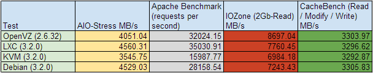
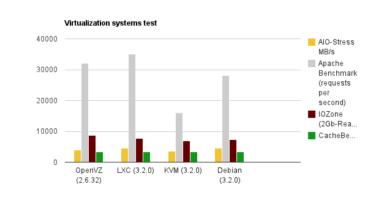

Наш опыт тестирования LXC (Linux Containers) на примере Debian Wheezy
8 мин39K
Туториал
Мы в компании Centos-admin следим за появлением новых технологий, тестируем их и, конечно же, внедряем. Почти на всех серверах мы используем контейнерную виртуализацию OpenVZ. В целях расширения набора инструментов, применяемых в работе, мы решили изучить и протестировать нативную виртуализацию Linux LXC.
Под катом вы найдете небольшой обзор технологии и краткий мануал по использованию LXC в Debian Wheezy и наши выводы.
Технология уже давно и активно разрабатывается. На данный момент стабильная версия 0.9, в следующем году готовится релиз 1.0, который будет включен в состав Ubuntu 14.04 LTS. Однако, на данный момент в mainstream-ядре Ubuntu отсутствует поддержка User Namespace, поэтому в данной статье рассмотрено применение Linux Containers на примере Debian Wheezy.
Стоит ли начать использовать LXC уже сейчас? Попробуем разобраться.
LXC (Linux Containers) есть не что иное, как технология виртуализации уровня операционной системы.
Хотя в полной мере технологией виртуализации LXC назвать нельзя, это скорее технология изоляции и разделения ресурсов компьютера.
LXC это логическое продолжение двух предыдущих технологий Vserver и OpenVZ, однако развивается в рамках “ванильной” ветки ядра начиная с версии 2.6.29., что является самым большим плюсом, поскольку позволяет начинать работу с контейнерами без каких либо манипуляций с системой по смене или модификации ядра.
Что представляет собой LXC? LXC — это набор утилит, позволяющий посредством API использовать возможности ядра Linux по созданию изолированных контейнеров операционной системы и их управлению. Достичь всего этого позволяют различные возможности ядра Linux:
Как и любая другая технология контейнерной виртуализации, LXC будет полезна для нужд веб-хостинга, разработки, а также для тестирования и отладки веб-проектов.
Установка, настройка LXC на Debian 7
Как уже было сказано ранее, LXC использует Cgroup, и чтобы начать работать с контейнерами, необходимо примонтировать файловую систему cgroup. По умолчанию точка монтирования /sys/fs/cgroup, однако можно производить монтирование в произвольной точке.
Поправим fstab, добавим cgroup:
vi /etc/fstab
...
cgroup /sys/fs/cgroup cgroup defaults 0 0
...
И примонтируем виртуальную файловую систему cgroup:
mount /sys/fs/cgroup
Для администрирования контейнеров используется набор утилит lxc.
Установим пакет lxc, остальное система сама подтянет:
apt-get install lxc
Папка в которой будут храниться контейнеры, по умолчанию: /var/lib/lxc
После установки утилит необходимо удостовериться, что система полностью готова для начала работы с контейнерами:
lxc-checkconfig
root@lxc-debian:~# lxc-checkconfig
Kernel config /proc/config.gz not found, looking in other places...
Found kernel config file /boot/config-3.2.0-4-amd64
--- Namespaces ---
Namespaces: enabled
Utsname namespace: enabled
Ipc namespace: enabled
Pid namespace: enabled
User namespace: enabled
Network namespace: enabled
Multiple /dev/pts instances: enabled
--- Control groups ---
Cgroup: enabled
Cgroup clone_children flag: enabled
Cgroup device: enabled
Cgroup sched: enabled
Cgroup cpu account: enabled
Cgroup memory controller: enabled
Cgroup cpuset: enabled
--- Misc ---
Veth pair device: enabled
Macvlan: enabled
Vlan: enabled
File capabilities: enabled
Note : Before booting a new kernel, you can check its configuration
usage : CONFIG=/path/to/config /usr/bin/lxc-checkconfig
Если все в порядке, можно попробовать создать первый контейнер.
Управление контейнерами
lxc-create -n test -t debian
где ‘-n test’ — имя контейнера, ‘-t debian’ шаблон ОС создаваемого контейнера.
Сам lxc-шаблон представляет собой bash-скрипт, который создает папки корневой файловой системы, минимальный набор файлов конфигов, а также подтягивает свежие пакеты из репозиториев. При этом, после первого запуска скрипта создания шаблона, нужные пакеты кэшируются на диске. Конечно же скрипт легко подстроить под себя. Например добавить установку набора необходимых для вас пакетов. Такой подход к шаблонам, по моему скромному мнению, немного удобнее чем в том же OpenVZ.
В Debian можно найти шаблоны Archlinux, Altlinux, Fedora, Opensuse, Ubuntu-Cloud. Если имеющегося набора шаблонов недостаточно, можно попробовать создать недостающий шаблон самому.
По умолчанию в Debian запускается некий мастер который поможет создать контейнер, проведя по нескольким шагам. И все бы хорошо, но вот шаблон Wheezy “сломан”, а использовать Sqeeze уже не очень хочется. Поэтому нужно либо сделать свой шаблон, либо поискать рабочий на просторах интернета.
Скачаем новый шаблон, к примеру, для CentOS 6:
cd /usr/share/lxc/templates
wget https://gist.github.com/hagix9/3514296/raw/7f6bb4e291fad1dad59a49a5c02f78642bb99a45/lxc-centos
chmod +x lxc-centos
Также для CentOS понадобится менеджер пакетов yum
apt-get install yum
Создадим новый контейнер с использованием шаблона CentOS:
lxc-create -n test -t centos
Создав первый контейнер, мы получаем абсолютно чистую систему: в ней нет практически ничего даже текстовых редакторов.
Попасть в консоль контейнера можно двумя способами:
При запуске контейнера вы автоматически попадете в его консоль, где вам нужно будет авторизоваться, по-умолчанию в Debian пароль root: root.
lxc-start -n test
Если вы используете альтернативный шаблон, то пароль можно подсмотреть в файле шаблона.
Второй вариант, подключение к уже запущенному контейнеру:
lxc-console -n test
При первом подключении к контейнеру должна появляться такая нотация:
Type <Ctrl+a q> to exit the console, <Ctrl+a Ctrl+a> to enter Ctrl+a itself
— это не работает или работает не всегда. Может быть на более свежих релизах уже починили.
Поэтому стоит использовать screen, либо запускать контейнер с ключом -d и заходить на него по ssh (если сеть уже настроена).
В общем случае контейнер будет использовать сетевой стек хостовой машины. Для тестирования вполне сойдет, но не для веб-проектов, поэтому далее рассмотрим как получить изолированный сетевой стек в контейнере.
Удаление контейнера выполняется утилитой lxc-destroy:
lxc-destroy -n test
Настройка сети
Рассмотрим два варианта:
— У нас есть сервер и много “белых” ip-адресов. Каждый контейнер может иметь свой адрес и свободно общаться с интернетом.
— У нас есть сервер и несколько, а то и всего один “белый” ip-адрес. В этом случае, скорее всего, большая часть контейнеров будет работать за NAT.
В обоих случаях нам пригодится сетевой мост, DHCP-сервер и iptables:
apt-get install bridge-utils isc-dhcp-server
Прежде чем приступить к настройке сети контейнера, настроим два сетевых моста (bridge) на хостовой машине. Один для “белых” адресов, другой — для приватных “серых” адресов.
Файл настроек сетевых адаптеров будет выглядеть так:
vi /etc/network/interfaces
# Для белых адресов
auto br0
iface br0 inet static
bridge_ports eth0
bridge_fd 0
address 192.168.0.100
netmask 255.255.255.0
gateway 192.168.0.1
dns-nameservers 192.168.0.1 8.8.8.8
# Для серых адресов
auto lxcbr0
iface lxcbr0 inet static
bridge_ports none
bridge_fd 0
address 10.0.0.1
netmask 255.255.255.0
Первый вариант
Пропишем сетевой адаптер в конфиге контейнера.
По умолчанию папка в которой содержатся контейнеры /var/lib/lxc, в ней ищем папку с именем нашего контейнера (test), в ней будет лежать файл config, его и будем редактировать.
Допишем в конец файла блок с сетевыми настройками:
vi /var/lib/lxc/test/config
...
# networking
lxc.utsname = centos
# Тип сети (виртуальный интерфейс)
lxc.network.type = veth
# Флаг - линк поднят
lxc.network.flags = up
# Физический сетевой адаптер (сетевой мост)
lxc.network.link = br0
# Имя виртуального адаптера в контейнере
lxc.network.name = eth0
# Имя виртуального адаптера на хостовой машине
lxc.network.veth.pair = veth0
# IP-адрес контейнера
lxc.network.ipv4 = 192.168.0.101/24
# Основной шлюз контейнера
lxc.network.ipv4.gateway = 192.168.0.1
# Физический (mac) адрес виртуального адаптера
lxc.network.hwaddr = 00:1E:2D:F7:E3:4F
Теперь можно запускать контейнер и пробовать подключаться по ssh:
lxc-start -n test -d && ssh root@192.168.0.101
Второй вариант
Второй вариант будет отличаться от первого тем, что мы будем использовать другой сетевой мост и в интернет наши контейнеры смогут выходить только через NAT.
Поправим конфиг контейнера centos:
vi /var/lib/lxc/test/config
...
# networking
lxc.utsname = centos
lxc.network.type = veth
lxc.network.flags = up
lxc.network.link = lxcbr0
lxc.network.name = eth0
lxc.network.veth.pair = veth1
lxc.network.ipv4 = 10.0.0.10/24
lxc.network.ipv4.gateway = 10.0.0.1
lxc.network.hwaddr = 00:1E:2D:F7:E3:4E
Чтобы наши контейнеры могли получать адреса автоматически, настроим dhcp сервер:
vi /etc/dhcp/dhcpd.conf
...
# Раскомментируем строку
authoritative;
…
# Блок нашей виртуальной подсети
subnet 10.0.0.0 netmask 255.255.255.0 {
range 10.0.0.10 10.0.0.50;
option domain-name-servers 192.168.0.1, 8.8.8.8;
option domain-name "somehost.com";
option routers 10.0.0.1;
default-lease-time 600;
max-lease-time 7200;
}
Также необходимо указать на каком сетевом интерфейсе будет работать DHCP:
vi /etc/default/isc-dhcp-server
...
INTERFACES="lxcbr0"
...
Нужно разрешить форвардинг пакетов на хостовой машине:
/etc/sysctl.conf
...
net.ipv4.ip_forward=1
...
sysctl -p
Чтобы обеспечить доступ в интернет с контейнеров, и доступ к контейнерам из сети интернет нужно настроить фаервол с помощью следующих правил iptables:
vi /etc/network/iptables.up.rules
*nat
:PREROUTING ACCEPT [0:0]
:OUTPUT ACCEPT [0:0]
:POSTROUTING ACCEPT [0:0]
# Доступ в интернет для контейнеров за NAT
-A POSTROUTING -s 10.0.0.0/24 -o lxbr0 -j MASQUERADE
# Если есть статический адрес, лучше использовать SNAT
# -A POSTROUTING -s 10.0.0.10/32 -j SNAT --to-source 192.168.0.100
# Проброс SSH в контейнер
-A PREROUTING -p tcp -m tcp -d 192.168.0.100 --dport 5678 -j DNAT --to-destination 10.0.0.10:22
COMMIT
*mangle
:PREROUTING ACCEPT [0:0]
:INPUT ACCEPT [0:0]
:FORWARD ACCEPT [0:0]
:OUTPUT ACCEPT [0:0]
:POSTROUTING ACCEPT [0:0]
COMMIT
*filter
:FORWARD ACCEPT [0:0]
:INPUT DROP [0:0]
:OUTPUT ACCEPT [0:0]
-A INPUT -m state --state ESTABLISHED,RELATED -j ACCEPT
-A INPUT -p tcp -m tcp --dport 22 -j ACCEPT
-A INPUT -p tcp -m tcp --dport 5678 -j ACCEPT
COMMIT
Применим правила:
iptables-restore < /etc/network/iptables.up.rules
Также сделаем чтобы правила автоматически загружались при загрузке сервера:
echo “post-up iptables-restore < /etc/network/iptables.up.rules” >> /etc/network/interfaces
Запустим контейнер и проверим подключение к интернет:
lxc-start -n centos -d
Резервное копирование, клонирование, восстановление
Для резервного копирования контейнеров используется утилита lxc-backup. С vzdump ее сравнивать не стоит. Утилита использует rsync для копирования файлов контейнера. Фактически она ничего не делает кроме простого копирования файлов контейнера в соседнюю папку. Практическая польза сомнительна. С тем же успехом можно использовать свой скрипт для бекапа файлов тем же rsync в нужное место.
Клонирование контейнеров производится с помощью утилиты lxc-clone, для восстановления из бекапа есть lxc-restore. Богатством функционала эти утилиты похвастать не могут, но необходимый минимум есть.
Что в итоге?
Технология прошла долгий путь в 39 релизов и 1989 коммитов (по состоянию на 14.11.2013) и на данный момент подходит некому завершенному виду. Возможно, в нынешнем виде использовать LXC на виртуальном хостинге еще рано, однако для частных проектов технология вполне подойдет.
Утилиты для работы с контейнерами, пожалуй, еще требуют доработки, и такая работа активно ведется. В то же время, на данный момент их функционала вполне достаточно для полноценной работы по внедрению и администрированию контейнеров Linux.
Немного цифр напоследок
Тестирование это тема отдельного поста, поэтому я не буду вдаваться в подробности, скажу лишь, что тесты проводились на одной и той же машине, для тестирования использовался Phoronix Test Suite 3.8 (знаю старовато), ОС в контейнере/виртуальной машине CentOS 6.4. Делалось все на скорую руку, тем не менее, вот что получилось:


Полезные статьи:
Debian Wiki LXC
Setting up LXC containers in 30 minutes
Ubuntu Server Guide LXC
LXC: Kонтейнерные утилиты Linux
Руководство по защищенным Linux-контейнерам
Теги:
Хабы: